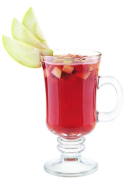

Вересковый чай — Даже в килте не замерзнешь!
Старинная шотландская легенда гласит, что скромный Вереск был единственным, кто по просьбе Бога согласился расти на голых ветряных склонах…
Легенда коктейля
Старинная шотландская легенда гласит, что скромный Вереск был единственным, кто по просьбе Бога согласился расти на голых ветряных склонах.
За это Господь наградил его оздоровительными свойствами, естественным очарованием и необыкновенным ароматом, а Дмитрий Соколов придумал в его честь неповторимый зимний коктейль.
(с) Авторский коктейль Дмитрия Соколова
- Как приготовить:
-
- Нарежь мелкими кубиками: четвертинку апельсина, дольку грейпфрута и дольку яблока
- Положи фрукты в бокал для ирландского кофе
- Налей: драмбуи 30 мл, бенедиктин 30 мл и гренадин 15 мл
- Добавь вересковый чай 100 мл
- Добавь гвоздику 2 гр и мускатный орех молотый 2 гр
- Размешай коктейльной ложкой
- Укрась веером из яблока